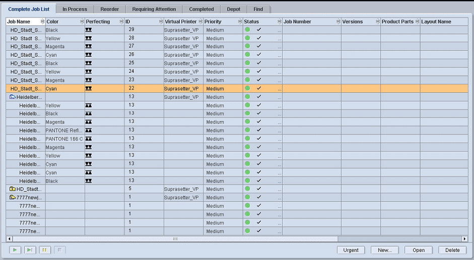
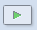
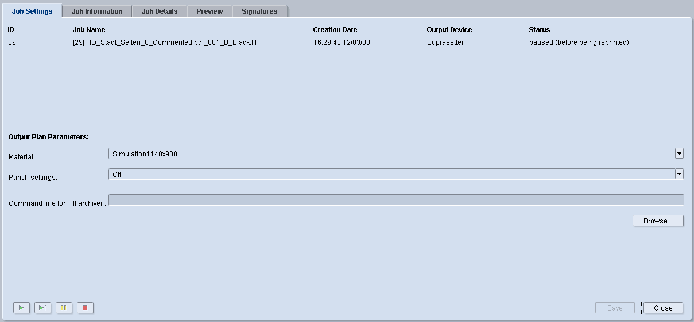
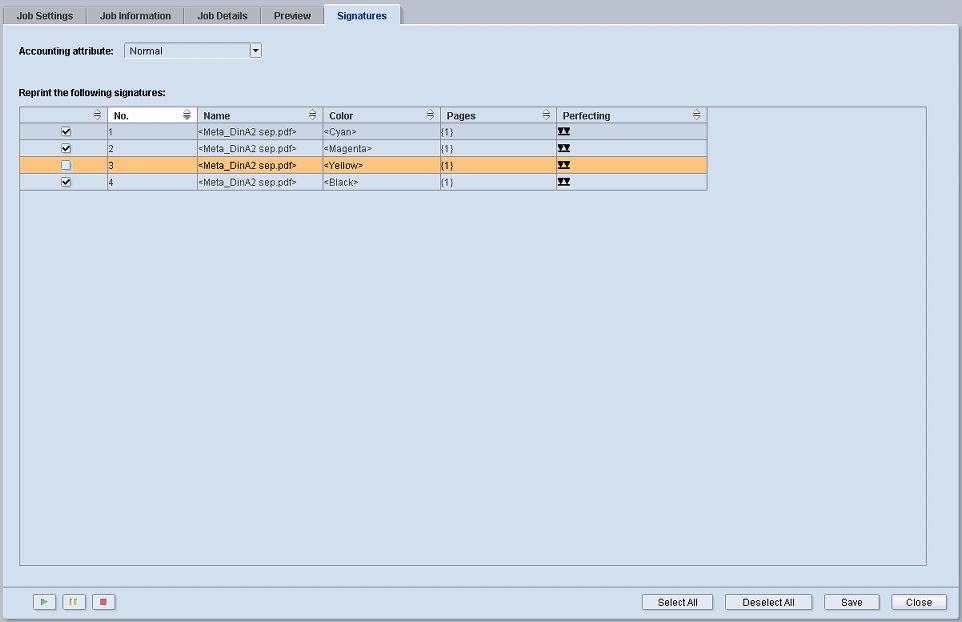
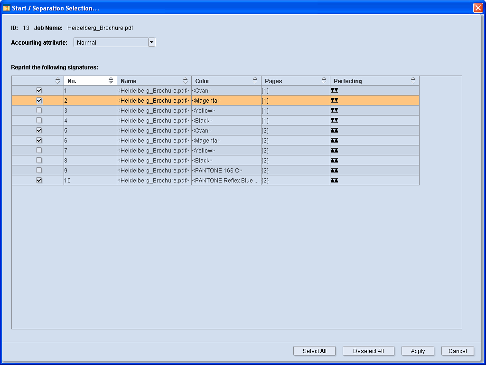

You will find the buttons for "Restart/Continue", "Pause" and "Cancel" (seen from left to right) at the left of the dynamic control panel.
These buttons affect one or more jobs (selection in the list view) or only the open job/component job, depending on whether the job list or job details is selected in the dynamic window.
The procedure for reprinting single separations differs depending on whether output of your job was sorted or unsorted (see Sorted and Unsorted Output).
Jobs with a sorted output are marked by a blue folder icon in the job list. You have two options for a reprint:
 Prerequisite: The "Pause Jobs before Reprint" option must be enabled in "Administration > Configuration > Preferences > Reprint" (see the "Pause Jobs before Reprint"). If it is not, the whole job is reprinted without a chance to make any changes to the output settings.
Prerequisite: The "Pause Jobs before Reprint" option must be enabled in "Administration > Configuration > Preferences > Reprint" (see the "Pause Jobs before Reprint"). If it is not, the whole job is reprinted without a chance to make any changes to the output settings.

1. To reprint a sorted job with modified output settings, select the job folder in the job list and click the Start button or select "Start / Job Modification" in the context-sensitive menu. A copy of the job is created in the job list.
2. Wait until the job's state is "paused" and open the job.
3. Go to the "Job Settings" tab.

You can set other output options if needed in this tab. You will find more details about the Output Plan settings in the "Output Plan Parameters" section:.
4. Click "Save" at the bottom of the dialog.
5. Go to the "Signatures" tab if you do not wish to reprint all the plates in the job with the modified settings.

6. Select one or more separations that you wish to reprint by ticking the boxes before the separations you want. You can select/deselect the entire list with "Select All" and "Deselect All" respectively.
7. Save your selection and click the "Start" button at the bottom of the dialog. The selected signatures are output again with the modified settings.
Reprint of single plates without modified output settings:
1. If you wish to reprint one or more plates as they are, for example, because an imaged plate was damaged, mark the job concerned and click the "Reprint but no job modification" button or select "Start / Separation Selection" in the context-sensitive menu. The "Start / Separation Selection" window opens:

2. Select one or more separations that you wish to reprint by ticking the boxes before the separations you want. You can select/deselect the entire list with "Select All" and "Deselect All" respectively.
3. Click "Apply" to close the window. A new job displays for each selected signature in the job list.
4. The reprint jobs are first "paused" if the "Pause Jobs before Reprint" option (see the "Pause Jobs before Reprint"). To print the jobs, select them in the job list and click the green Start button.
The reprint jobs are processed and printed automatically if "Pause Jobs before Reprint" is not enabled.
 Note: If you have many jobs waiting to be processed and you want to output this component job urgently, you can change its priority to immediate output by clicking the "Urgent" button in the "Reorder" tab (see the Printing "Urgent" Jobs Next).
Note: If you have many jobs waiting to be processed and you want to output this component job urgently, you can change its priority to immediate output by clicking the "Urgent" button in the "Reorder" tab (see the Printing "Urgent" Jobs Next).
Note: You can reprint single plates also by means of remote control at the Heidelberg CP2000 software.
If you are working with an unsorted output without FBDI protocol, all the separations of a job display as component jobs in the job list. The jobs in the job list are marked by a yellow folder icon if the FBDI protocol is enabled in the Tiff-B Export Engine Manager. In this case, to reprint you can mark the whole folder or expand the folder and select the component jobs you want.
To reprint the jobs or component jobs with and without modifying the output settings, proceed as described in the Jobs with sorted output.
Copyright © 2013 Heidelberger Druckmaschinen AG